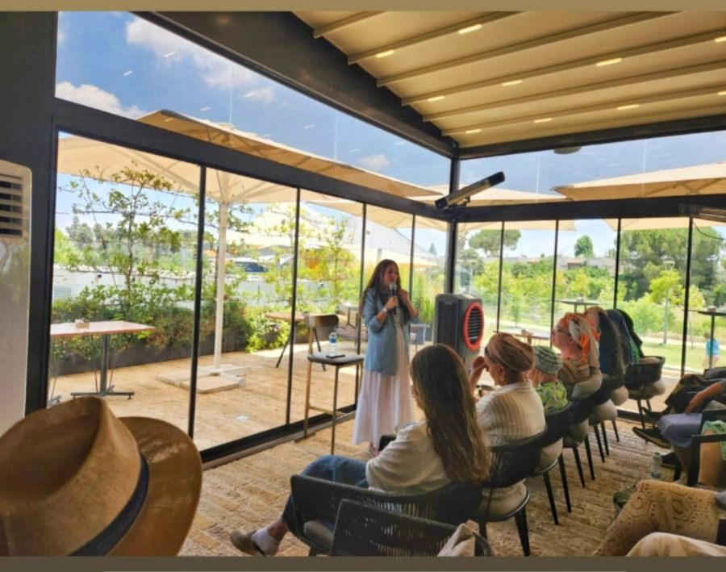
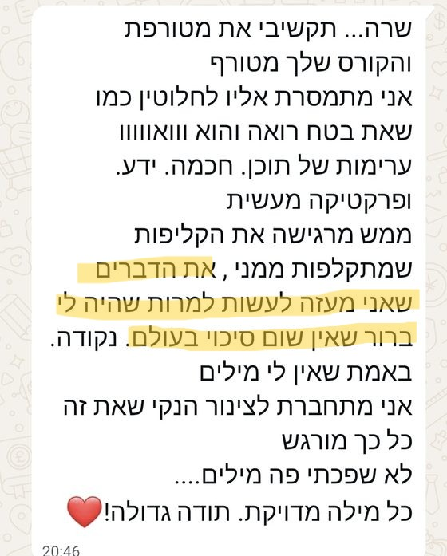
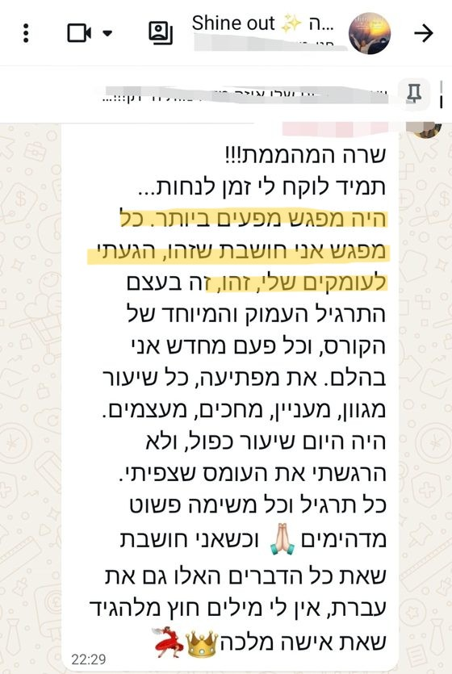
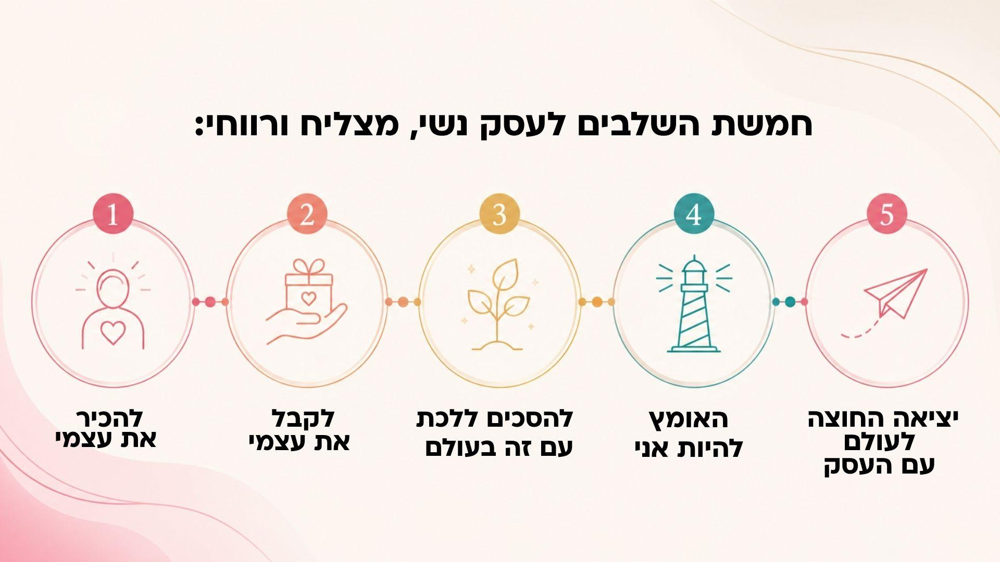
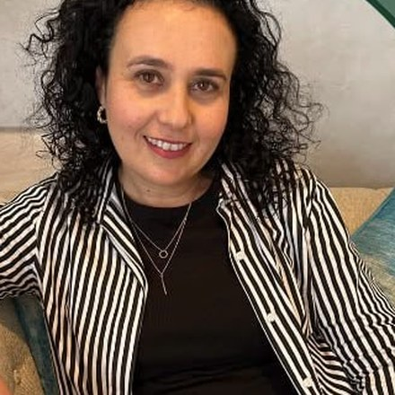
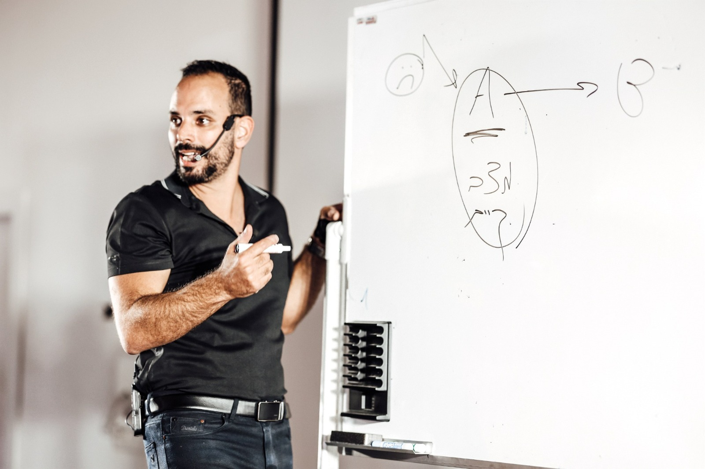

למטפלות ומאמנות שכבר אוהבות את המקצוע שלהן, ורוצות לקחת את השלב הבא: ללוות גם בעלות עסקים, בלי לוותר על מי שהן.
את אוהבת לטפל. ואז גילית שלהחזיק עסק אומר גם לשווק, למכור, להיות נוכחת ברשתות ולהתמודד עם חוסר יציבות בהכנסה.
את לא צריכה להיות אושיית רשת, ואת לא צריכה להפוך למישהי אחרת, כדי שיהיה לך עסק יציב.
חני · מאפרת ודולה
שרון · מאסטר NLP ויועצת פיננסית
נחמי · מטפלת ברפואה סינית
רייזי · מנחת סדנאות היומן הויזואלי
ההרשמה נסגרת לפני הפתיחה, ומספר המקומות מוגבל.
כל מה שלמדת עד היום על "איך בונים עסק" נבנה בעולם קר וזכרי. עולם שמדבר על אסטרטגיה, יעדים, משפכי מכירות ו-KPI-ים. עולם שמסתכל על עסק כמו על מכונה שצריך לתפעל נכון.
אבל את לא מכונה. ועסק שאת בונה לא צריך "לתפקד", הוא צריך שתאהבי אותו.
נשים לא בונות עסק מתוך פחד או מתוך טבלת אקסל. הן בונות מתוך חיבור. מתוך תשוקה. מתוך האנרגיה שזורמת כשעושים את מה שאוהבים באמת.
וכשמנסים ללמד אישה לנהל עסק בשפה הקרה הזו, היא לא "נכשלת" כי היא לא מספיק ממושמעת. היא נתקעת כי זו פשוט לא השפה שלה.
השפה שלה היא שפה
של התאהבות.
עמוק בפנים את מרגישה שהגיע הזמן לקפיצת דרך - ואת כנראה מזהה את עצמך באחד משני התיאורים הבאים:
את עושה עבודה רגשית מדהימה עם אנשים, אבל הלב שלך קורא לך לעבוד עם נשים עצמאיות ובעלות עסקים - וחסרה לך השפה העסקית שתתרגם את העומק שלך לתוצאות אמיתיות.
את נותנת ללקוחות שלך את האסטרטגיות הכי טובות, אבל רואה אותן נתקעות שוב ושוב - ורוצה כלים טיפוליים עמוקים לפרק את החסמים מהשורש.
והאמת? זה משפיע ישירות גם על העסק שלך כרגע:
אם סימנת לעצמך
"כן" ליותר משורה אחת - זה לא במקרה
כי הבעיה כמעט אף פעם לא באמת
השיווק, המחיר או התוכן
היא עמוקה יותר
ואת יודעת מה הכי מפתיע?
הדרך מכאן הלאה היא לא עוד אסטרטגיה
היא מסע של להתאהב מחדש - בעצמך,
בשליחות שלך, ובעסק שאת בונה
זו דרך חדשה להסתכל על עולם העסקים הנשי ב-2027.
רוב ההכשרות מלמדות אותך איך לבנות עסק. אני רוצה ללמד אותך איך להבין את האישה שמאחורי העסק.
במשך שנים ליוויתי מאות בעלות עסקים מכל התחומים, וגיליתי שוב ושוב את אותו הדבר:
וכשזה השתנה - גם העסק השתנה.
העולם לא צריך עוד יועצות עסקיות. הוא צריך נשות מקצוע שיודעות לראות את מה שמאחורי הקלעים:

מפתחת שיטת Inside Out ומייסדת ההכשרה למטפלות עסקיות.
מעל 12 שנים בעולם העסקים, וקרוב לעשור של ליווי בעלות עסקים: פרטני, בקורסים, בסדנאות, בריטריטים ובמעגלי נשים. בהכשרה שלי אני יועצת עסקית, מטפלת תודעתית ויועצת מינית, וזה בדיוק החיבור שהשיטה בנויה עליו.
יש היום יועצות עסקיות. יש מאמנות. יש מטפלות רגשיות. אבל מעט מאוד נשות מקצוע יודעות לחבר בין העולם הפנימי לבין התוצאות העסקיות - כי עסק הוא לא רק אסטרטגיה, הוא השתקפות של האישה שמנהלת אותו.
במהלך ההכשרה תלמדי לזהות את החסמים שמתבטאים בעסק, אבל נולדו הרבה לפניו. תלמדי להתאהב בעסק שלך מחדש - ומתוך האהבה הזו, להרחיב אותו למקצוע שאת יודעת להעביר הלאה לנשים אחרות.
כמה מילים של נשים שעברו אצלי קורסים ותהליכי עומק:


שיטה שנולדה מתוך מאות שעות של ליווי נשים, מחקר, ניסיון, למידה והתבוננות - ומחברת בין עולמות שבדרך כלל לא נפגשים:
כי מבחינתי, אי אפשר להפריד ביניהם. זו לא הכשרה שתלמדי רק עם הראש - זו הכשרה שתעברי עם כל מי שאת.
במשך כשישה חודשים תחווי בעצמך את התהליך שאת עתידה להוביל: תלמדי, תתרגלי, תתנסי, תקבלי משוב, תלווי נשים, ותבני לעצמך דרך מקצועית המבוססת על השיטה. רק מתוך החוויה האישית הזו תוכלי להפוך למטפלת עסקית שמובילה שינוי אמיתי.
אי אפשר לבנות עסק שאת אוהבת, בלי להתאהב קודם בעצמך. לכן שיטת Inside Out בנויה מ-6 מודולות, וכל אחת מהן היא מסע התאהבות בפני עצמו.
מי את באמת, מעבר לכל הסיפורים, הטראומות והתפקידים שלמדת שהם את. אלו היסודות לעסק מצליח באמת.
להפוך את הידע והניסיון שכבר יש לך לשיטה שאפשר ללמד וללוות איתה אחרות.
לדעת להחזיק מרחב אמיתי לתהליכי שינוי, לא רק להנהן ולהיות אוזן קשבת.
לבנות עסק מתוך הזהות של אישה מצליחה, לא מתוך תבניות קרות, מנוהלות וזכריות.
לצאת לעולם בלי הפחד מחשיפה או מנראות. ה"מה יגידו" כבר לא מנהל אותך, ואת יוצאת החוצה בגאון.
לקחת את כל העבודה הפנימית החוצה - לקבוצות, לקורסים, לכנסי זום, לחיים שלמים מלאים עשייה של שליחות ותשוקה.
קודם מתאהבות. רק אחר כך יוצאות החוצה לעולם.
רוצה לראות בדיוק מה נלמד בכל מודולה? הסילבוס המלא כאן.
ואת לא צריכה. זו לא זהות אחרת ולא התחלה מאפס, זו הרחבה של מה שכבר יש לך. הכלים הטיפוליים שלך נשארים בדיוק במקום, ומצטרף אליהם הצד העסקי.
לא צריך תואר. צריך ניסיון בעבודה עם אנשים, ואת זה כבר יש לך. את הצד העסקי לומדים כאן מהיסוד, בשפה של מטפלת ולא בשפה של רואה חשבון.
הקבוצה נשארת קטנה בכוונה, כי כל משתתפת מקבלת ליווי אישי. זו גם הסיבה שההרשמה נסגרת ולא נפתחת מעבר לגודל שמאפשר את זה.
לא נשארת לבד. יש קבוצת ליווי לאורך כל הדרך, סטאז' מלווה עם משוב אישי, וקהילת בוגרות שממשיכה גם אחרי שההכשרה נגמרת.
זו בדיוק נקודת הפתיחה הנכונה. לאורך ההכשרה את מיישמת את הכלים העסקיים על העסק שלך, אז הוא צומח תוך כדי ולא מחכה לסוף.
קורס שיווק נותן לך טקטיקות. כאן לומדים לזהות קודם מה עוצר את האישה מתחת לבעיה העסקית, ורק אחר כך בונים את הפרקטיקה. בלי זה הטקטיקות לא מחזיקות.
כן, וזה במכוון. את חווה את השיטה על עצמך לפני שאת מלווה בה אחרות. זה מה שהופך אותה לשלך, במקום לרשימת טכניקות שלמדת.
כל מודולה נפתחת בשאלה שכמעט כל אישה שואלת את עצמה, ונסגרת במשהו שאת לוקחת איתך.
לפני שנוגעות בעסק, בלקוחות או בשיווק: מי את?
תצאי עם: מפת זהות אישית וחוזה אישי, המסמכים שילוו אותך לאורך כל ההכשרה.
"אני חושבת שאני לא יודעת כלום." באמת?
תצאי עם: מפת הידע שלך וכל מרכיבי השליחות כתובים, הבסיס לכל פוסט וכל שיחת מכירה מכאן והלאה.
"אבל מה עושים שעה שלמה?"
תצאי עם: היכולת להחזיק מרחב אמיתי לתהליך שינוי, ולא רק להנהן ולהיות אוזן קשבת.
"גם ככה עמוס לי, איך אנהל עסק?"
תצאי עם: מודל עסקי, מוצרים ותמחור. לא בתיאוריה, אלא מיושם על העסק שלך.
"יש לי יחסים מורכבים עם הרשתות."
תצאי עם: היכולת לצאת החוצה בלי שה"מה יגידו" ינהל אותך, ולבקש תשלום בלי להתנצל.
"מעבר למה שאני יכולה בכלל לדמיין כרגע."
תצאי עם: קבוצות, קורסים וכנסי זום. וגם עם תעודת הסמכה, אחרי השלמת הסטאז' והדרישות.
כי את לא מגיעה לכאן רק כדי ללמוד עוד שיטה
במהלך ששת החודשים האלה יקרו שלושה תהליכים במקביל: את תעברי בעצמך את הדרך. את תלמדי להוביל נשים אחרות בדרך הזו. ואת תבני ותצמיחי את העסק שלך תוך כדי.
תלמדי להסתכל מעבר למה שהלקוחה מספרת לך שהיא "לא מצליחה לעשות", ולזהות מה באמת מנהל אותה. פחד, אמונה, טראומה, דפוס, מערכת עצבים שנמצאת בהישרדות, או אולי בכלל בעיה עסקית שדורשת פתרון פרקטי. תלמדי לראות את האישה ואת העסק שלה כתמונה אחת שלמה.
תלמדי להבין כיצד זהות, עבר, אמונות, מערכת העצבים, מערכות יחסים, כסף וערך עצמי מתבטאים בתוך העסק. במקום להפריד בין "הבעיה הרגשית" ל"בעיה העסקית", תלמדי לעבוד עם שתיהן ולנוע באופן מקצועי בין ה-Inside ל-Out.
לאורך ההכשרה לא רק תלמדי את השיטה, אלא תחווי אותה על עצמך. תכירי את עצמך לעומק, תפגשי את הדפוסים והחסמים שמנהלים אותך, תעבדי על הנראות, הכסף, הביטחון והיכולת שלך לתפוס מקום, ותעברי בעצמך את הדרך שאת עתידה להוביל בה נשים אחרות.
תרכשי כלים מעולמות התודעה, העבודה עם הגוף ומערכת העצבים, דמיון מודרך, מדיטציה, ויסות רגשי, אבחון והובלת תהליכים. תלמדי לא רק להכיר כלים, אלא להבין מתי להשתמש בהם, עם מי, למה ואיך לשלב אותם בתוך תהליך שלם.
לא תישארי עם אוסף של כלים וטכניקות. תלמדי כיצד לאבחן, לזהות את השורש, לבנות מפת ליווי ולהוביל תהליך שמחבר בין עבודה פנימית לבין תנועה עסקית מעשית. תדעי איך להתחיל תהליך, איך להתקדם בתוכו ואיך להתאים אותו לאישה שמולך.
תלמדי לעבוד גם עם הצד העסקי: מודל עסקי, תוכנית עסקית ושיווקית, מוצרים, תמחור, כסף, קהילה, תוכן, מכירות ונראות. כך תוכלי לעזור ללקוחה לא רק להבין מה עוצר אותה, אלא גם לבנות את הדרך המעשית שתאפשר לעסק שלה להתקדם.
כל מה שתלמדי לא יישאר בתיאוריה. לאורך ההכשרה תיישמי את הכלים העסקיים על העסק שלך, תדייקי את הבידול והמסרים שלך, תבני מוצרים, תעבדי על השיווק והנראות ותשתמשי גם בכלי AI וטכנולוגיה כדי להפוך רעיונות למציאות.
באמצעות תרגולים, עבודה בזוגות, סימולציות, סטאז' פרטני, סופרוויז'ן וקליניקת סטאז' חיה, תצברי ניסיון אמיתי. לא תסיימי את ההכשרה ותשאלי את עצמך "אבל איך מתחילים?". כבר במהלך הדרך תתנסי, תקבלי משוב ותבני בהדרגה את הביטחון המקצועי שלך.
תהיי חלק מקבוצה של נשים שלא רק לומדות יחד, אלא עוברות יחד תהליך אישי ומקצועי. יהיה לך מקום לשאול, להתייעץ, להביא מקרים מהשטח, לקבל משוב ולהרגיש שאת לא צריכה להבין הכול לבד.
בסיום ההכשרה, ובכפוף להשלמת הסטאז' ועמידה בדרישות ההסמכה, תוכלי לצאת כמטפלת עסקית בשיטת Inside Out. עם היכולת לראות את האישה שמאחורי העסק. להבין מה באמת עוצר אותה. לעבוד איתה מבפנים. ולעזור לה להפוך את השינוי הפנימי לתנועה ממשית בעולם.
לא רק לטפל. לא רק לייעץ.
להוביל נשים לשינוי אמיתי, מבפנים החוצה.
תתאהבי מחדש בעצמך ובעסק שלך, בתהליך אישי עמוק שישפיע על כל תחומי חייך.
תרכשי מתודולוגיה סדורה לליווי בעלות עסקים בשיטת Inside Out.
תלמדי לשלב בין טיפול רגשי, עבודה עם התודעה וליווי עסקי פרקטי.
תקבלי תעודת הסמכה כמטפלת עסקית, לאחר השלמת הסטאז' ועמידה בדרישות.
כי עסק לא משתנה כשמתקנים אותו. הוא משתנה כשמתאהבים בו מחדש.
חסם עסקי הוא כמעט תמיד אנרגיה תקועה - פחד, אמונה מגבילה, סיפור ישן שעדיין מנהל אותך מבפנים. אי אפשר לפרק אותו רק עם עוד תבנית שיווקית. לכן כל הקורס בנוי משני חלקים המשלימים זה את זה, כי לא ניתן להוביל אחרות למקום שעדיין לא עברנו בעצמנו.
תעברי בעצמך את התהליך ותכירי לעומק את שיטת Inside Out.
נתרגם את העבודה הפנימית לעולם העסקי, כך שתדעי ללוות נשים גם ברמה המקצועית.

22 מפגשים בבית שמש בימי שני, ועוד 2 מפגשים בזום עם מרצים אורחים. כל התאריכים כאן.
כדי להתאים לך את ההכשרה בדיוק לצרכים שלך, תקבלי שתי פגישות אישיות איתי בזום - אחת בתחילת התהליך ואחת לקראת סיום, שבהן אכיר את סיפור חייך לעומק ואתאים לך את התכנית בהתאם.
בכל מפגש תתרגלי סימולציות, תהיי גם מטפלת וגם מטופלת, ותיישמי כלים עסקיים ישירות על העסק האישי שלך תוך כדי הלמידה.
קבוצת ווטסאפ עם תרגילים, משימות ומדיטציות קצרות. לקראת הסיום - תקופת סטאז' מקצועית עם ליווי צמוד וקבלת משוב.
כדי להתאים לך את ההכשרה בדיוק לצרכים שלך, אחת בתחילת הדרך ואחת בהמשכה.
מרחב חי לאורך כל ההכשרה: שאלות, שיתופים, תרגילים ומדיטציות קצרות, גם באמצע השבוע.
ארגז כלים משלך: תרגילים, שאלונים ומתודולוגיות שילוו אותך גם שנים אחרי הסיום.
תיישמי את השיטה על מתאמנות אמיתיות, עם משוב והכוונה אישית, עד שתרגישי בטוחה לצאת לבד.
בית מקצועי גם אחרי הסיום, להתייעץ ולהמשיך לצמוח לצד נשים שעברו בדיוק את מה שאת עוברת.
שתי נשות מקצוע מהשורה הראשונה, כל אחת בתחום שלה, בתוך מסלול ההכשרה.

מפגש 2, בזוםלרתום את הטראומה ולהמשיך בחיים
20 שנות ניסיון · מרצה בינלאומית · פיתחה את שיטת SSTT©
עובדת סוציאלית קלינית, פסיכותרפיסטית ומוסמכת לטיפול בשיטת SE. מנחת סדנאות בשיטה שפיתחה: טיפול קצר מועד סומאטי בטראומה, דיאלוג עם הגוף.

מפגש 20, בזוםמכירה שיוצרת שינוי
מומחה למכירות · מנטור ומרצה
מלווה בעלי ובעלות עסקים לבנות תהליך מכירה שנשען על הקשבה ועל ערך אמיתי, ולא על לחץ. במפגש נלמד למכור בלי להתנצל ובלי לוותר על מי שאת.
לנשות מקצוע שמאמינות שהצלחה עסקית אמיתית מתחילה בשינוי פנימי, ורוצות להוביל תהליכים עמוקים שמייצרים שינוי מתמשך - בחיים ובעסק של הלקוחות שלהן.
את בעלת עסק שמבינה ששני החלקים הולכים ביחד: גם לטפל בעצמך - בעולם הפנימי, בפחדים ובדפוסים שמלווים אותך - וגם לבנות עסק יציב, מקצועי ורווחי לאורך זמן. לא עוד "או-או". שיטת Inside Out נבנתה בדיוק בשביל השילוב הזה - ריפוי אישי וצמיחה עסקית, יחד, כתהליך אחד שלם.
זו לא הרשמה סופית. זו התחלה של שיחה.
מלאי את הפרטים, ונקבע שיחת ראיון אישית.
אין תשלום בסוף הטופס. אחרי ההרשמה נקבע שיחת ראיון קבלה, ולא כל מי שפונה מתקבלת. הקבוצה נשארת קטנה כי כל משתתפת מקבלת ליווי אישי.
את פותחת את היומן בבוקר, ויש בו לקוחות.
לא כי רדפת אחריהן, אלא כי את יודעת בדיוק מי הן, מה את נותנת להן, ואיך הן מגיעות אלייך.
את יושבת מול אישה שמספרת לך על העסק שלה, ואת רואה מתחת למילים את מה שבאמת עוצר אותה. ואת גם יודעת מה עושים עם זה, לא רק רגשית אלא גם מעשית: מה היא מוכרת, במה מתמחרת, מה הצעד הבא שלה.
בסוף החודש את מסתכלת על המספרים ולא מתכווצת.
ובכל זה, את לא הפכת למישהי אחרת. את אותה אישה שאוהבת לטפל, רק שעכשיו יש לה גם עסק שמחזיק את זה.
נועה · מלווה נשים בתהליכי ריפוי
שיר · מטפלת רגשית
רחל · מטפלת NLP
חנה · קלינאית תקשורת
איילה · מרצה ומנחת סדנאות
חנה איידי · מטפלת רגשית ודולה
מיכל · מורה לשפע ומלווה להגשמה
פרידה · מובילה נשים לזוגיות פורצת דרך
רחלי · קליניקה להחלקות וגוונים
צפורה · מעצבת אירועים
ספיר · קוסמטיקאית טבעית
מלי · מאמנת אישית וזמרת
ריקי · קוסמטיקאית
מיכל · מנטורית לשפע והגשמה
רחל כץ
פנינה
לאה
הילה
לאה מ.
22 מפגשים פרונטליים בבית שמש. שני מפגשים נוספים מתקיימים בזום, כל אחד עם מרצה אורח בתחומו.
מספר המקומות מוגבל. ההכשרה בנויה על ליווי אישי לכל משתתפת, ולכן הקבוצה לא תיפתח מעבר לגודל שמאפשר את זה.
אפשרויות מימון ותשלומים יימסרו בראיון, למי שתימצא מתאימה.
דרישות ההסמכה
הנחיית סדנת זום בכנס בוגרות ההכשרה
הנחיית מעגל נשים בריטריט
ליווי 3-4 מתאמנות בתשלום סמלי לצבירת ניסיון
לפני 12 שנים עברתי את משבר חיי, שהופיע בדמות דיכאון אחרי לידה. הייתי מדוכדכת באופן תמידי, לא מסופקת מחיי, לא מוגשמת בכלל, עם מינוס ענק בבנק ו-30 קילו יותר.
מתוך תהומות העצב והייאוש הצלחתי למצוא בתוכי קול פנימי שלחש לי שהחיים יכולים להיראות אחרת. לאט אבל בטוח, ובעזרת השם, מצאתי את הדרך לחיים טובים יותר.
בדרך עברתי משברים נוספים שמהם צמחתי: גילוי מחלה כרונית, וגילוי פוסט טראומה מורכבת שהתפרצה באמצע החיים. הדרך שבה צעדתי עוד קודם נתנה לי את הכוחות להגיע לריפוי ולמציאות החדשה שביקשתי לעצמי.
את השינוי שחוויתי אני מתפללת להעביר הלאה לכל אישה באשר היא. אני מאמינה שלכל אחת מאיתנו יש אפשרות לנהל עסק שופע ומצליח, מתוך חיבור עצמי וחיבור הכרחי לבורא.
המחזור נפתח ב-12.10.2026, והקבוצה נשארת קטנה.
נקבע שיחת ראיון אישית, נכיר, ונבדוק ביחד אם זו הדרך הנכונה לך. בלי התחייבות ובלי תשלום.
מחכה לך בהתרגשות,
שרה שרבאני